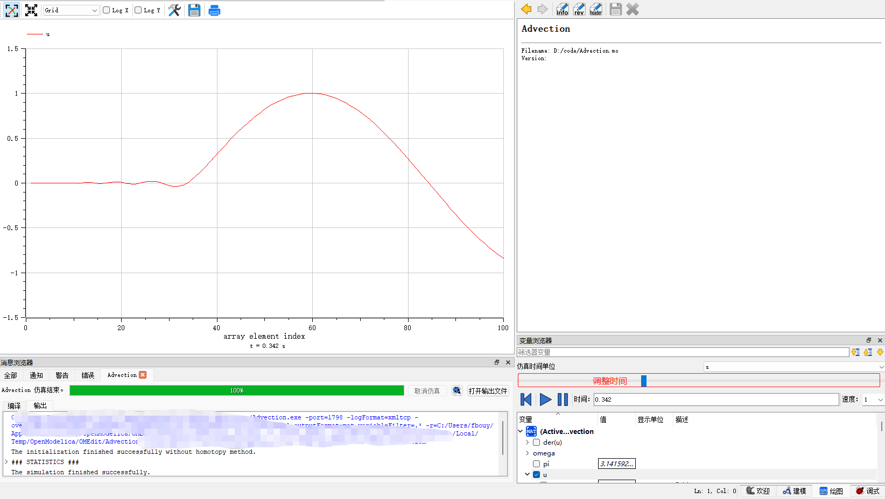
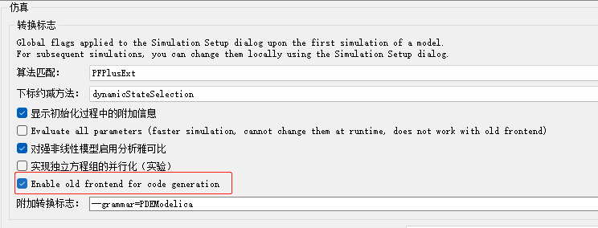

偏微分方程 PDE
一般来说，我们建模的变量都只有时间一个，但是有时候我们还是会遇到时间无关的独立变量。这时就可能需要去解偏微分方程了。
以下列方程为例：
其中：
- x 是独立变量，且；
- 初始条件1：；
- 初始条件2：。
根据上面的方程，我们可以进行建模：
model Advection "advection equation"
parameter Real pi = Modelica.Constants.pi;
parameter DomainLineSegment1D omega(L = 1, N = 100) "domain"; // 创建一个定义域，长度为L， 等分为N 份；
field Real u(domain = omega) "field"; // 根据作用域Omega，创建一个因变量u；
initial equation
u = sin(2*pi*omega.x) "IC"; // 在t=0 时的方程，即初始条件1
equation
der(u) + pder(u,x) = 0 indomain omega "PDE"; // 实际的方程
u = 0 indomain omega.left "BC"; // 在x=0 之前（左侧）的初始条件，即初始条件2
u = extrapolateField(u) indomain omega.right "extrapolation"; // 在x 超过作用域之后的边界条件，保持默认
end Advection;DomainLineSegment1D 参数
record DomainLineSegment1D "Record representing 1-dimensional domain where a partial differential equation hold."
record Region
end Region;
parameter Real x0(unit="m")=0 "x value at left boundary，左边界";
parameter Real L(unit="m")=1 "length of the domain，自变量长度";
constant Integer N(unit="")=10 "number of grid nodes，分割数";
parameter Real dx = L / (N-1) "grid space step" "步长";
parameter Real[N] x(each unit="m") = array(x0 + i*dx for i in 0:N-1) "space coordinate";
Region left, right, interior "regions representing boundaries and the interior";
end DomainLineSegment1D;计算结果

可以调整时间，观察某个时间点函数随x 的变化情况。
注意
- 需要通过
Tools->Options->Simulation->OMC Flags给编译器增加--grammar=PDEModelica标识； - 需要将前后端代码生成器设置成旧的版本，新版本会报错
Modified element unit/domain not found in class Integer； - 包含上面代码的库文件不能被自动加载！
